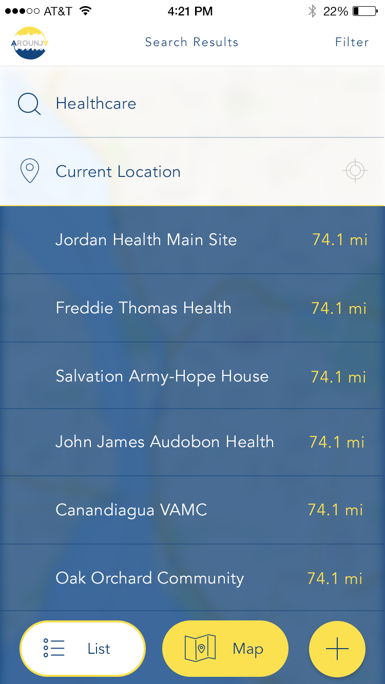
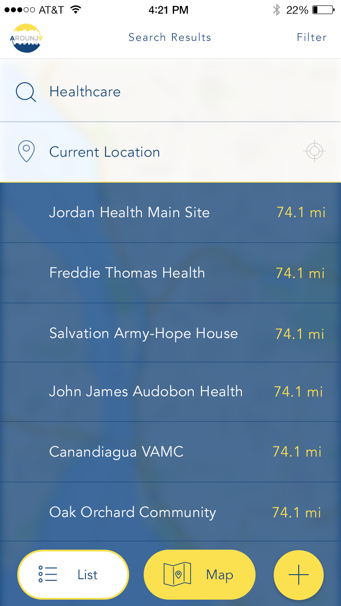
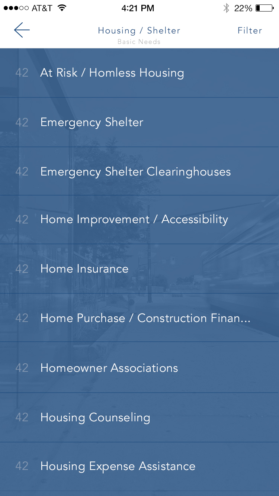
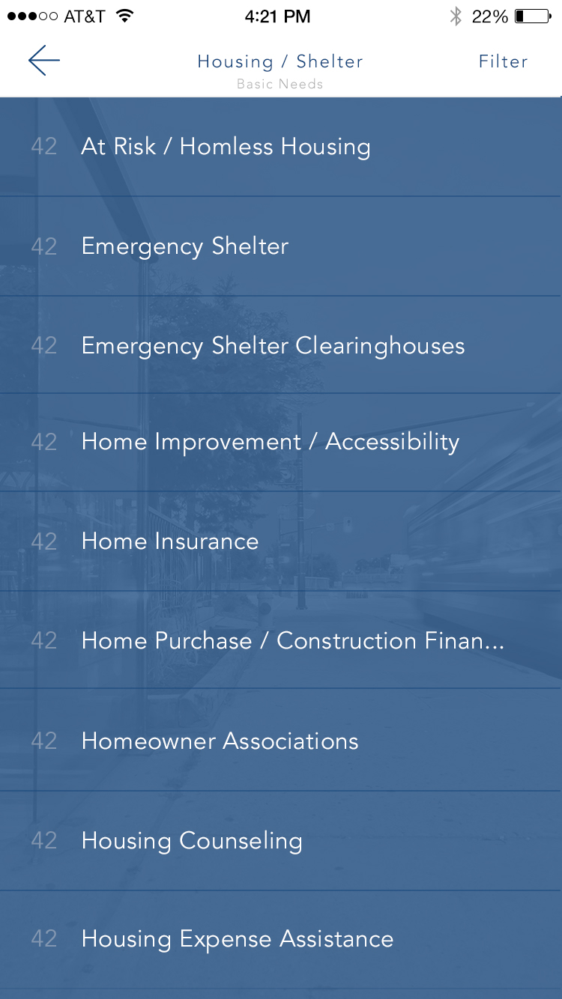

Keep Exploring.
Discover more case studies and past projects to see how each solution came together.
At A Glance: Designed a mobile application that helps people quickly locate community services, from healthcare to housing and employment. The experience balances map-based discovery with searchable lists and category filtering.
Arounja is the brainchild of Community Connections of New York (CCNY) in Niagara Falls and was designed to connect people to the resources they need with clarity and speed. I owned the UX strategy, interaction design, and UI system, ensuring the product stayed approachable while handling large data sets and complex filtering.
The app supports resource discovery by location, allows people to share new listings, update existing resources, and pass helpful information to others when it matters most.
Role: Lead UX + UI Designer (Interaction Design + Product Strategy).
Partners: 19 IDEAS Development Team + Community Stakeholders.
Scope: Native App UX, Search + Filter System, Map + List UI, And Multi-Platform Delivery.
Tools: Sketch, Illustrator, UX Flows, Wireframes, And Interactive Prototypes.
The first interaction is intentionally lightweight: a clear search prompt and friendly, familiar UI so users can start without feeling overwhelmed. This keeps the experience accessible for people who need help fast.
The map-first experience lets users search nearby services while still providing a list view for more detail. Large, thumb-friendly controls support one-handed use and quick switching between views.
 

The dual-view pattern keeps navigation consistent while shifting focus between geography and content density. Users can jump between the two without losing their place or search context.
To keep the experience approachable, filters were designed as single-select and multi-select overlays that never overwhelm the user. This kept high-volume category data easy to narrow down, even on smaller screens.
High-level category browsing keeps exploration lightweight, with quick visual cues and clean spacing that make it easy to choose a path.
Once users choose a category, the UI keeps momentum with clear hierarchy and readable cards. Detail pages surface key actions, contact info, and directions without burying the essentials.
Additional category sets show how the system scales as programs and services grow, without redesigning the layout or changing user expectations.
 

For services that are date-driven, the calendar view keeps events scannable and helps people plan ahead without digging through long lists.
Login and sign-up flows are intentionally minimal, prioritizing speed and clarity while keeping the visual system consistent with the rest of the app.
The build leveraged Ionic so Arounja could ship across Android, iPhone, and desktop without fragmenting the UX. That meant one consistent experience regardless of platform.
To support broad adoption, the platform was designed around a licensing model so other organizations could launch their own local instances of Arounja while keeping the same UX foundation.
The b-roll below captures the app in use, highlighting search flows, map interactions, and detail views.
Discover more case studies and past projects to see how each solution came together.
You can contact and connect with me through email, on Dribbble, or LinkedIn as well.